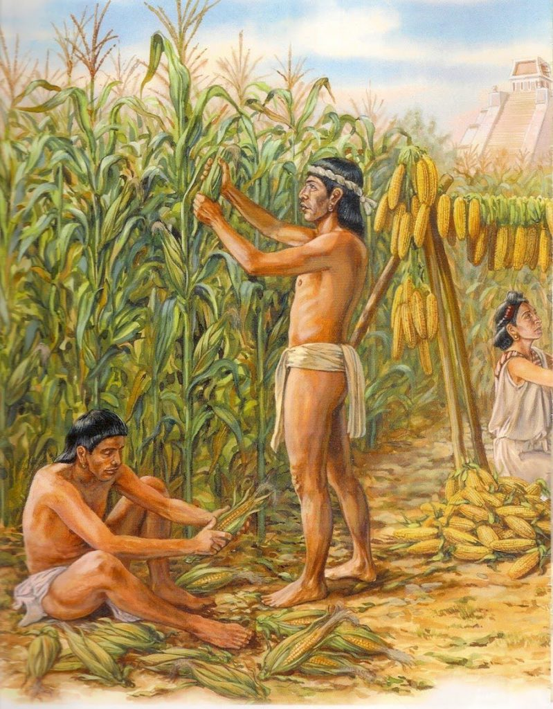
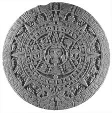
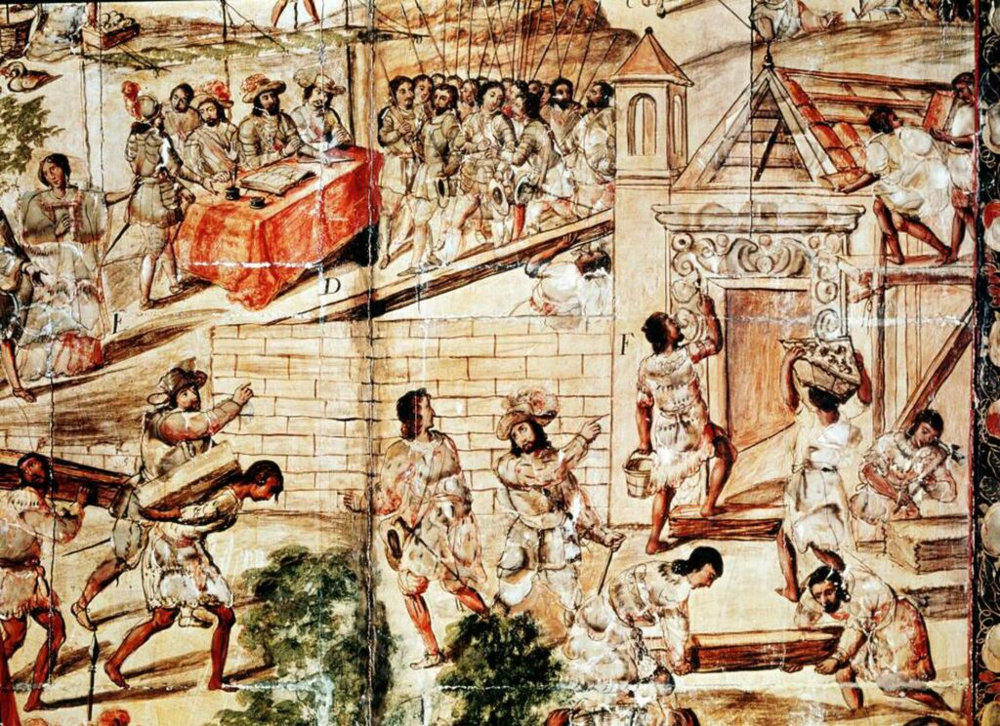
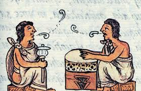

Agricultura
Uno de los conocimientos más valiosos es el de la agricultura sostenible, adaptada a los diversos climas y ecosistemas. Muchas comunidades indígenas practican la agricultura en terrazas, que previenen la erosión y optimizan el uso de agua, como es común en los Andes. Otros pueblos, como los mayas, desarrollaron el sistema de milpa, que combina el cultivo de maíz, frijol y calabaza en una misma parcela, promoviendo la fertilidad del suelo y evitando el uso de productos químicos.
Conocimientos Astronomos
Las observaciones astronómicas son fundamentales en muchas culturas indígenas y están relacionadas con la siembra, la cosecha y las estaciones. En Mesoamérica, por ejemplo, los mayas desarrollaron un sistema de calendario basado en observaciones precisas del sol, la luna y las estrellas. Estos calendarios no solo organizaban la vida cotidiana, sino que también formaban parte de su identidad y conexión con el cosmos.
Tecnicas de construccion
Las técnicas de construcción tradicional indígena están diseñadas para integrarse con el entorno, utilizando materiales locales como la madera, el barro, la palma y la piedra. Estas técnicas, como las viviendas de adobe en los Andes o las malocas en la Amazonía, ayudan a mantener el clima interior confortable de manera natural y tienen un bajo impacto ambiental.
Transmision Oral de conocimientos
La tradición oral es el medio principal por el cual se transmiten los conocimientos indígenas. Los ancianos de la comunidad, como guardianes del saber, enseñan a las nuevas generaciones mediante cuentos, mitos, leyendas y narraciones de experiencias. Esta transmisión oral es esencial para preservar la historia, la identidad y la cohesión social de la comunidad.
